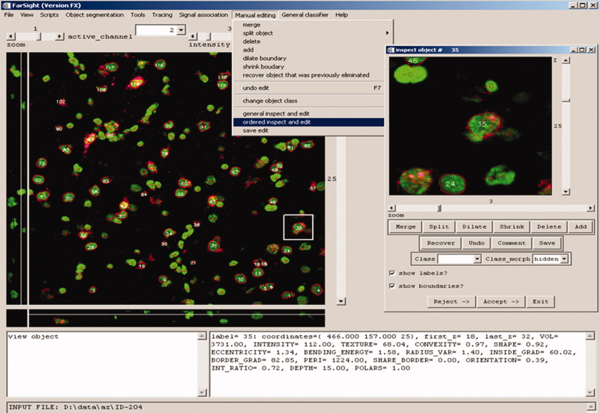

Cytometry Vol.71A, 9 Pages: 724-736
Copyright © 2007 International Society for Analytical Cytology
View Normal Image View List of Images

International Society for Analytical Cytology
Figure 6. The graphical user interface (GUI) for efficiently inspecting and editing segmentation and classification. The window on the right is used for specifying training samples, and for validating the automated segmentation and classification results. It displays segmentations as outlines, object ID's, and codes to indicate automated actions (-G implies a glial cell classification, -X indicates a deleted cell). The features of the selected cell are displayed on the lower right. The user can accept, reject, or edit the automated results. By visiting the results in increasing order of segmentation confidence, the user can choose to exit the system once an acceptable confidence is reached. The manual effort is proportional to the number of errors rather than the total number of objects.
implies a glial cell classification, -X indicates a deleted cell). The features of the selected cell are displayed on the lower right. The user can accept, reject, or edit the automated results. By visiting the results in increasing order of segmentation confidence, the user can choose to exit the system once an acceptable confidence is reached. The manual effort is proportional to the number of errors rather than the total number of objects.